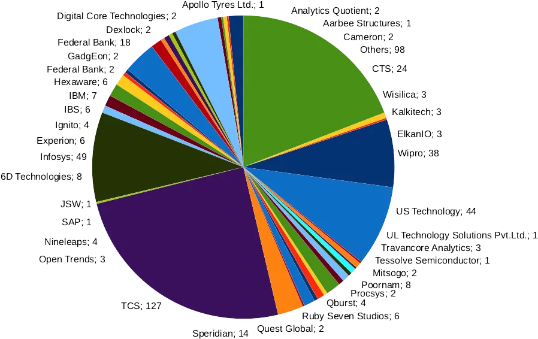
- Home
- Placements
Placements
One of the largest placement records among self-financing engineering colleges in Kerala.
600* offers
Class of 2026 (As on May 2026)
17.22 LPA
Highest package
602 offers
Class of 2026 (as on May 01, 2026)
16.4 LPA
Highest Package
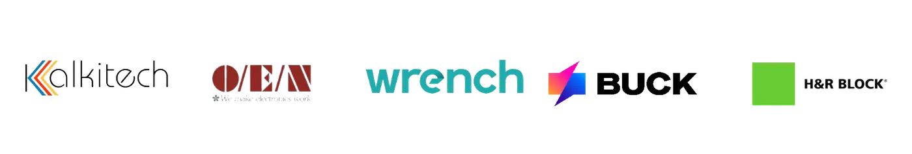
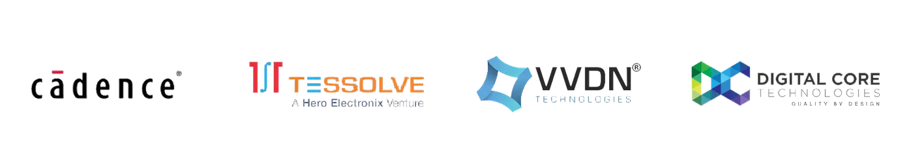
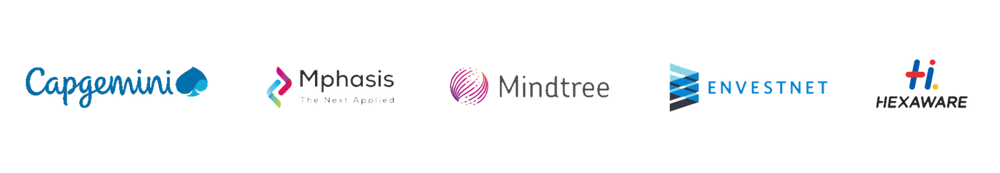
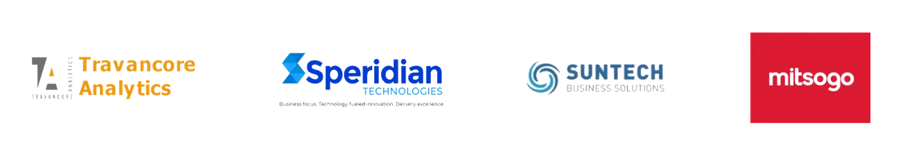
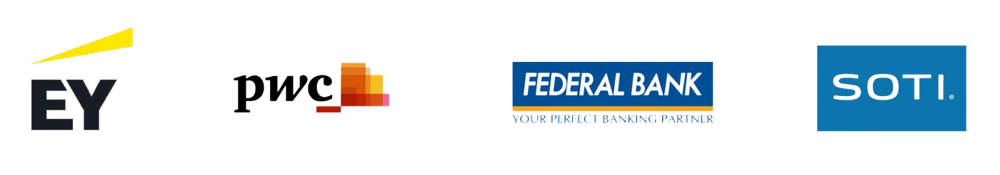
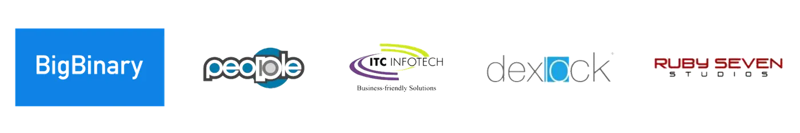
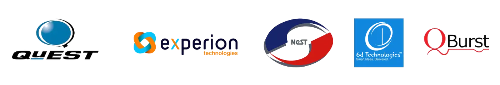
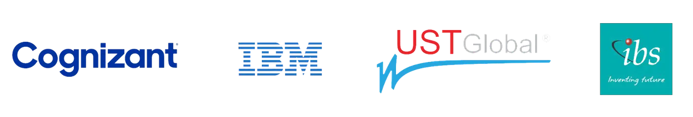
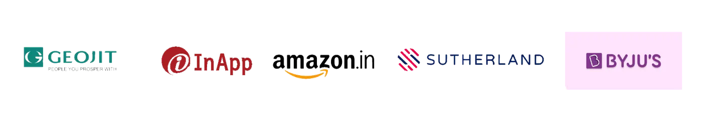
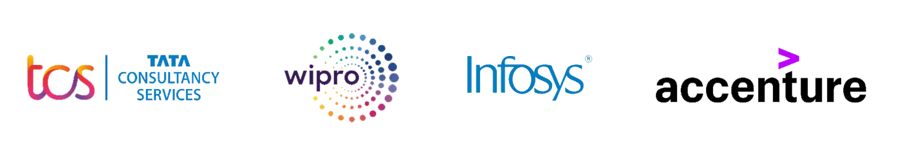
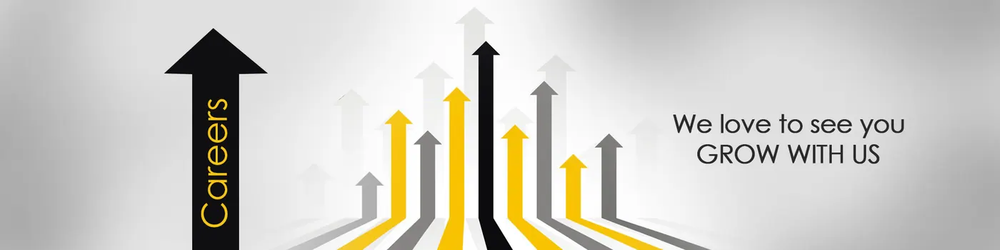
FISAT probably has one of the best trained students in the state and this is clearly indicated by the high acceptability of its graduates in the industry. A consistent focus on quality has enabled the placement and training cell to make commendable achievements over the years in campus recruitment processes. The fact that all eligible, interested students are able to find a job from campus in spite of the ups and downs in the market has been the highlight of the achievements.
FISAT ensures that the students are groomed according to the requirements of industry. In addition to the persistent academic rigour with focus on quality projects, internships and acquiring updated knowledge, every student is made to go through a series of soft skill enhancement training programs during their course for nearly 100 hours. This holistic approach moulds an industry ready professional who can take up the challenges of the modern world.
The fact that our students are placed in MNCs like IBM, TCS, Infosys, Accenture, SAP, Wipro, CTS, IBS, UST Global, Government and Public Sector companies like BARC, ONGC, Powergrid, Delhi Metro and commercial banks like Federal Bank, South Indian Bank, Core Engineering companies like MRF, Apollo Tyres, Sobha, Procsys, Kalkitech etc speaks volumes about the professional excellence of students.
The major activities of the Placement and Training Cell include
- Coordinating the Campus placement activities of the college
- Conducting regular training for improving the soft-skills
- Conducting regular tests, GD`s and Mock Interviews
The major thrust area of the placement cell is training programs. Every student undergoes at least 150 hours of training programs which is spread across the years of study. They are trained by the best in the industry. Career guidance and placement orientation is ensured through sessions organised in-house and support from experts from outside. Guidance on how to prepare for various competitive exams like GATE, CAT, MAT, GRE, UPSC, PG entrance examinations etc. are also provided.
FISAT has achieved some of the most enviable results as far as placements are concerned - one of the biggest number of placements among self financing engineering colleges in kerala.Click on the following links to view the placement record of each batch:
Placement for 2026
Continuing the legacy of excellence, the FISAT Class of 2026 has delivered an outstanding placement performance despite evolving industry trends and competitive hiring landscapes. With 600+ placement offers already secured from leading multinational companies and core industries, FISATians have once again demonstrated their strong technical expertise, adaptability, and industry readiness.
The highest package reached ₹17.22 LPA, reflecting the growing recognition of FISAT talent among top recruiters. Students from Computer Science, Electronics, Mechanical, Civil, Electrical, and emerging interdisciplinary streams secured opportunities across IT, core engineering, consulting, banking, and product-based sectors.
Major recruiters include renowned organizations from the IT/ITES sector, core engineering industries, banking and financial services, and product development domains. The placement season also witnessed increased participation from innovation-driven companies offering roles in software development, AI, design engineering, analytics, consulting, and business solutions.
With the placement drive still progressing, the Class of 2026 is set to achieve even greater milestones, further strengthening FISAT’s reputation as one of the leading engineering institutions for placements in Kerala.
LIST OF COMPANIES | LIST OF STUDENTS PLACED

Placement for 2025
It is truly inspiring to see that the FISAT Class of 2025 has elevated the placement statistics to a new benchmark, even amidst challenging industrial conditions and the widespread influence of AI. A standout highlight is the growing interest shown by leading core companies in FISATians, reflected in the exceptional performance of Civil, Mechanical, and Electrical Engineering students, who have secured an average package of ₹5.2 LPA, closely aligned with the ₹5.7 LPA average of their peers in Computer Science and Electronics. What makes this year even more remarkable is the exceptional performance of the Computer Science and Design students, who achieved the highest placement percentage of 91.6%. The highest package offered this year is ₹11 LPA.
Among the major IT/ITES recruiters were TCS, Cognizant, Infosys, LTIMindtree, Deloitte, EY, and KPMG, while prominent core companies included Cadence, Digital Core, Forbes Marshall, KPIT, TISMO, Ignitarium, Schneider Electric, NF Forgings, Hyundai Polytech, TAFE, Aarbee, Sobha, RDC Concrete, MeTCON, NSK Bearings, Asian Paints, and Walkaroo. Additionally, the recruitment of Federal Bank and ESAF provided excellent opportunities for students aspiring to enter the banking and financial services sector. This year will witness even more impressive statistics as the third phase of recruitments has started quite well!
LIST OF COMPANIES | LIST OF STUDENTS PLACED
Placement for 2024
Despite the economic uncertainties and industry challenges, the Class of 2024 achieved remarkable success in campus recruitment. A total of 79 students secured packages of 7LPA or more, with 484 offers from 113 companies. The highest package reached 47.88LPA, while the average package stood at a respectable 5.7LPA. Notable recruiters included Amazon, TCS, CTS, SAP, Tataelxsi, People10, SOTI, UST, and Qburst. Core companies like Cadence, Schneider, Kalkitech, Procsys, Aarbee Structures, RDC, Saint Gobain, Dalmia, Walkaroo OEN, and Tejas Networks also hired students. Additionally, banking and financial services companies such as Federal Bank, ESAF, and HDFC were among the top recruiters. Other companies, such as Code Young, Intellipat, Jobin and Jismi, Veritas Prime Labs, Vanenburg, and Thinkpalm, have also recruited students for both business development (BD) and technical roles. Truly impressive achievements!
LIST OF COMPANIES | LIST OF STUDENTS PLACED
Placement for 2023
741* offers in 120Companies (As on 24 June 2024)
The performance of the class of 2023 in campus recruitment has been exceptionally good. They have set a new record for the number of people with high packages and the average package of a batch. There are 108 students with a package of 7LPA or more. The number of offers stands at 741 in 120 companies as on date. The highest package was 17LPA and average package a respectable 5.18LPA. The major recruiters were TCS, CTS, IBM, IBS, Heaware, Orion, People10, SOTI, Qburst, Experion. Core Companies including Cadence, Schneider, Kalkitech, Procsys, Ignitarium also recruited students. Companies from the banking and financial services like Federal bank, ICICI, ESAF, HDFC, YES bank were also among the top recruiters. Other companies which recruited students were Code young, 6D technologies, Travancore Analytics, Acsia, White Rabbit, Interland, Aditya birla, Jobin and Jismi, Veritas Prime labs, RDC Concrete, Sutherland etc.
LIST OF COMPANIES | LIST OF STUDENTS PLACED

Placement for 2022
906* offers in 79 companies (as on 28 October 2022)
The class of 2022 set a new record in the placement history of FISAT. Driven by the huge industry demand, the number of offers touched 906 from 79 companies in the month of July. This year, the campus was able to attract a few new companies including Deloitte, Applied Materials, Hella and Tech Mahindra Cerium. The major recruiters including TCS, CTS, Wipro, UST, IBS made the campus visit in the first phase of recruitment and offered a commendable number of students. Some other major recruiters were IBM, Cadence, Federal Bank, KPMG, Camgemini, Mindtree, Hexawre, Kalkitech, EY, MuSigma etc. It was a dream come true for students as they had a choice of companies they wanted to work for. Students were offered in a wide spectrum of companies from IT as well as Engineering domains. The highest package was by Federal Bank 12.4LPA and followed by Applied materials with 9.2LPA. There were 13 companies which offered more than 6LPA including TCS Digital, SOTI, CTS Genc Next, People10.
LIST OF COMPANIES | LIST OF STUDENTS PLACED

Placement for 2021
604 offers in 103 Companies
In spite of the hurdles posed by the pandemic, the campus recruitment process of the 2021 graduating batch has been a great success. FISAT students came out successful in the online recruitment process of many companies. The major companies that recruited the students this year are TCS, Infosys, Accenture & Wipro. Packages in the range of 6-8 Lakhs per annum were offered by TCS (Digita), CTS (GenC Next), Pricewaterhousecoopers, Big Binary and Byjus.
LIST OF COMPANIES | LIST OF STUDENTS PLACED
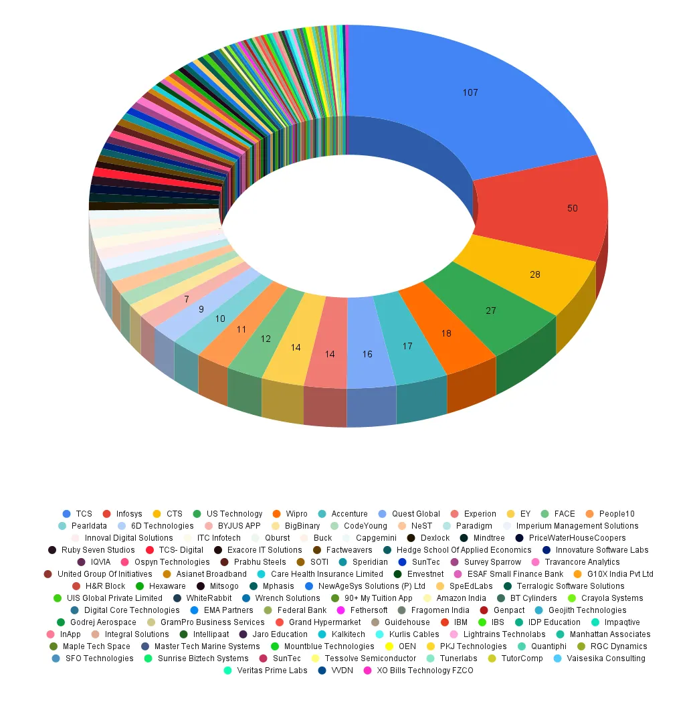
Placement for 2020
448* offers in 67 Companies
The first phase of recruitment of the batch graduating in 2020 kicked off in the month of August 2019. The major recruiters were TCS, Wipro, CTS, IBS, BigBinary, EY and Quest Global, Federal Bank. Covid-19 had impacted the third phase of recruitments in the campus. There was a marked change in the packages the companies were ready to offer on campus for the 2020 batch. The highest package offered in the campus stood at 12 Lakhs Per Annum, and there were quite a few offers in the range of 5-10 Lakhs Per Annum.
LIST OF COMPANIES | LIST OF STUDENTS PLACED
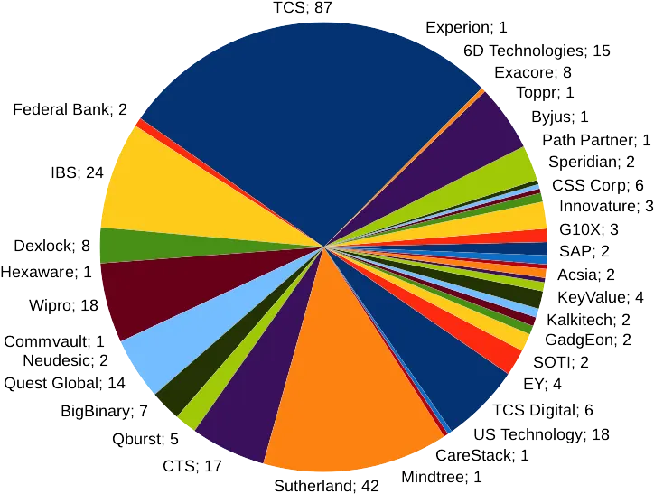
Placement for 2019
512 offers 56 companies
The year 2019 was the most successful year for the Placement and Training Cell in its history. With 512 offers in 58 Companies, the campus set a new record for itself. The year saw a boom in the requirements of the industry and brought out the best in the students. The performance of students were exceptional and was matched by the list of companies that visited the campus. The year also saw companies ready to offer higher packages to students who were best performers. The major recruiters of the year were TCS (127 offers), Infosys (49 offers), UST Global (44 Offers), Wipro (37 Offers), CTS (24 offers), Federal bank (18 Offers), Speridian (14 offers). The other major recruiters were IBM, Experion, Qburst, Kalkitech, Travancore Analytics, Cameron, Procsys, Quest Global, Apollo Tyres, JSW, Litmus 7, SAP, Shriram Group, Tessolve Semiconductors, Dexlock, Poornam, Hexaware.
LIST OF COMPANIES | LIST OF STUDENTS PLACED
Placement for 2018
248 Offers in 46 Companies
The major recruiter in 2018 was TCS with 80 offers, followed by UST global, 33 offers. TCS recruited students to their EIS, Engineering and Industrial Services. The recruitment season ended well with students getting offered in many reputed IT and Core Engineering Jobs. The statistics stood at 248 offers in 46 companies. Both IT and Core engineering recruitments showed some revival after the economic turbulence both inside and outside the country.
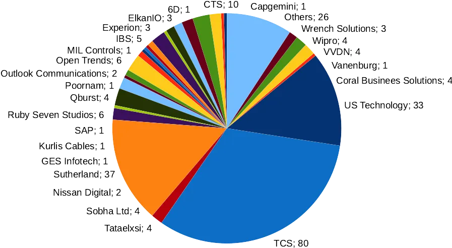
Placement for 2017
The major recruiter in 2017 was TCS. 2017 was the year which saw a decline in the campus recruitments, both in IT and Core Engineering. ITES sector recruiter in larger numbers. The changes in economic and political scenarios in US, and India both added to the situation. Even though there was some revival in the trend towards the end, the year ended with a lower number than the previous year. There was a total 261 offers in 21 companies. The number stood one of the highest among colleges in the state.
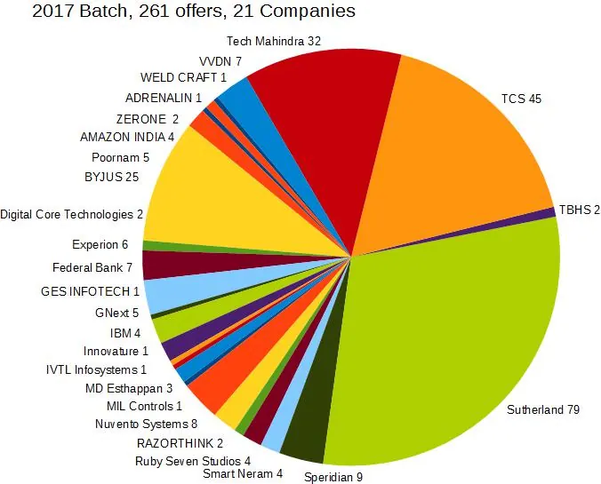
Placement for 2016
The recruitment of the batch graduating in 2016 started during the month of September 2015. TCS visited in the first slot and made 111 offers, the biggest number so far for TCS in FISAT. This was followed by other companies like UST Global, Litmus7, Kalkitech, Standard Chartered Bank, SAP etc. The recruitment has been very successful with 355 offers in 43 Companies.
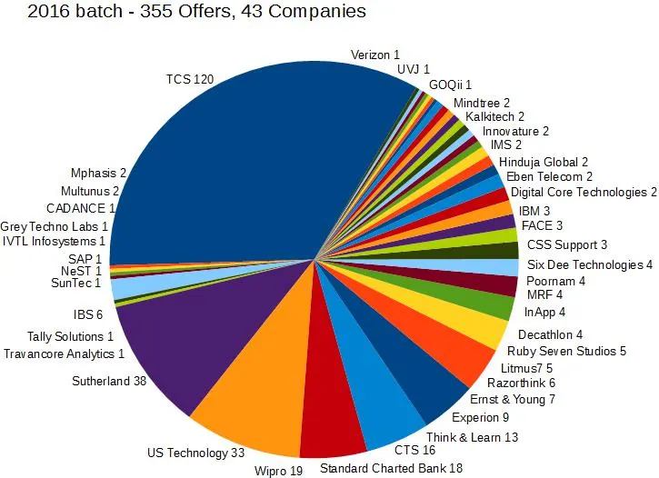
Placement for 2015
320 offers in 40 Companies
The IT Giant TCS opened the recruitment season of 2015 batch in style with with a total of 94 offers. More companies followed and the number of offers touched 320. Some of the other major recruiters were MRF, SAP, UST Global, Federal Bank etc. The 2015 batch saw more opportunities in campus both IT and Core Engineering.
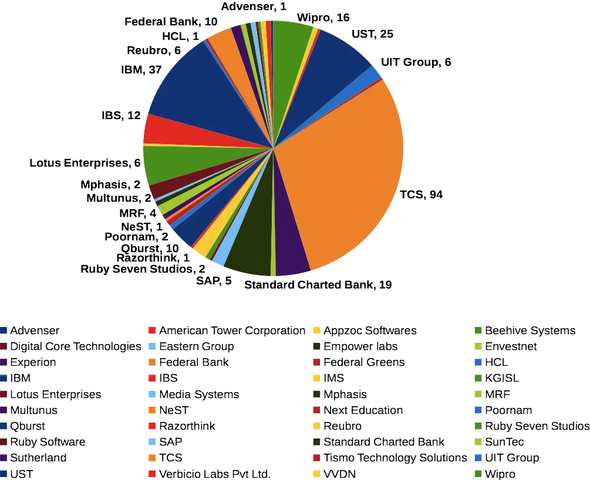
Placement for 2014
Total number of offers: 357 offers in 32 companies.
Though the placement season of 2014 batch started slow, it picked up pace and broke the record of the previous batch. Some of the big numbers were UST Global 62, Cognizant 59 and TCS 56. The total number offers crossed 357, an all time record for FISAT.
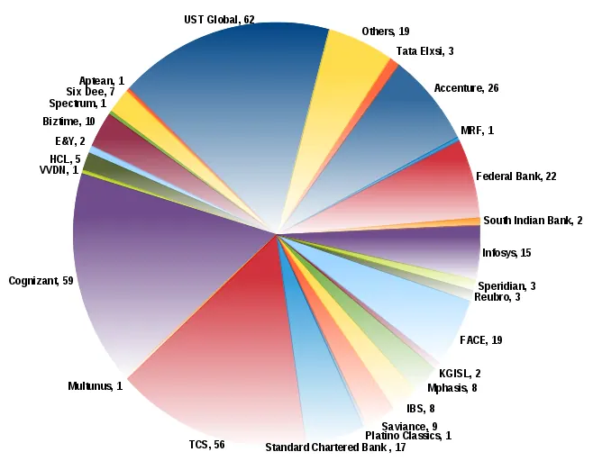
Placement for 2013
Total number of offers : 283 offers in 38 Companies.
In spite of the slow down in the IT fresher recruitment, students have performed really well grabbing 283 offers in 38 Companies. The IT giant TCS is the biggest recruiter with 63 offers on campus. The highlight of the 2013 batch was opportunities in core companies for students in Mechanical, Electrical as well as Instrumentation Engineering branches.
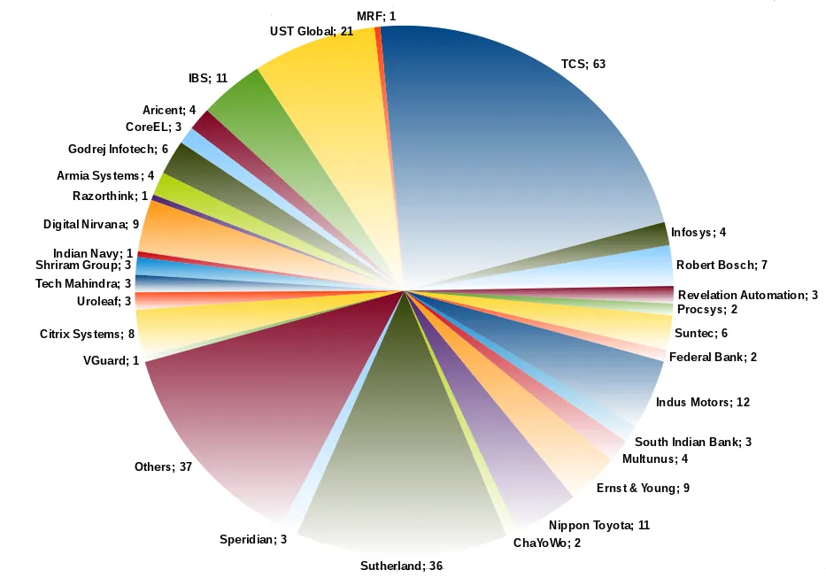
Placement for 2012
The recruitment of 2012 batch kicked off in a grand fashion with IT Giant TCS making 135 offers on 15th September 2011 and Accenture making 76 offers on 18th September 2011, biggest number for both TCS and Accenture so far at FISAT. Sourcebits made 7 offers on 21st September 2011.
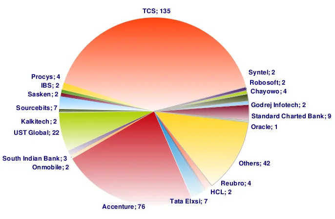
Placement for 2011
Total number of offers 322*
The highlight of the ongoing campus recruitment of 2011 batch is the on-campus visit by global IT giant Microsoft. Microsoft made two offers on 22nd March 2011. The recruitment season started off in December 2010 with TCS making 102 offers, the biggest number so far by a single company at FISAT. Another big achievement was 44 offers in Accenture, again the biggest number for Accenture at FISAT. Other companies which visited the campus include Syntel, HCL Infosystems, Tata Elxsi, Mphasis, UST Global, Poornam etc. We are expectingmore companies to visit the campus during this year.
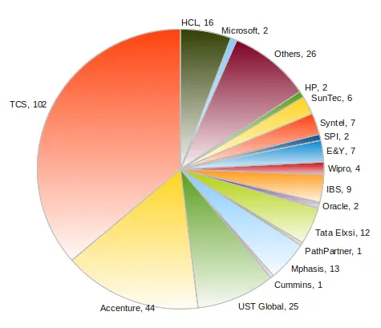
Placement for 2010
Total Number of offers 234
Even though recession had affected Campus Recruitments in the beginning, towards the end of 2010, companies like TCS, Poornam, Federal Bank, Bank of Baroda etc, visited the campus and selected a good number of students. The chart below gives a glimpse of the offers made by different companies.
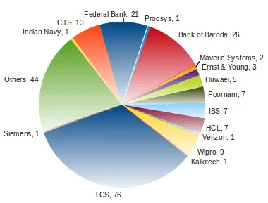
Placement for 2009
Total number of offers : 197
The highlight of 2009 batch was that TCS made 73 offers and Infosys 30. The chart below gives and idea about the offers made by different companies.
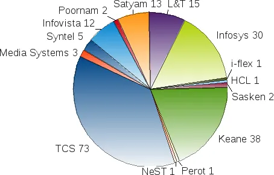
Placement for 2008
Total Number of offers: 227
It was for the 2008 batch that the it giant TCS accredited FISAT and recruited directly from campus. TCS made 50 offers. Infosys, Wipro, CTS, Keaneand Federal Bank were some of the major recruiters that year. Another highlight that year was one job offer in Microsoft.
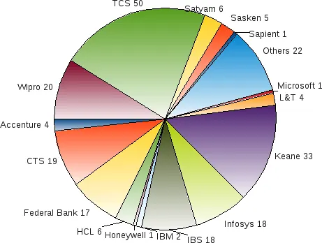
Placement for 2007
Total number of offers: 281
The biggest achievement of the placement cell happened in 2007. The total number of offers exceeded the number of students. This was the year during which almost all IT companies in india were recruiting freshers in good numbers. Some of the major recuiters in that year was Infosys, US Technology, IBS, CTS, Accenture, Bosch, HCL and Caritor.
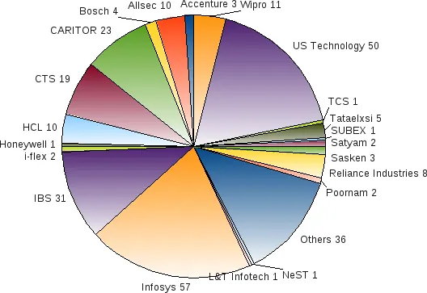
Placement for 2006
Total number of offers: 206
2006 batch was thevery first batch from FISAT to appear for campus recruitments. Though some of the companies were reluctant to come to campus,theperformance of our students were exceptional. The students from FISATbaggeda good number of job offers in combined drives conducted during thatyear. The biggest recruiters were Infosys, IBS, US Technology, Accenture, Satyam and Hexaware.
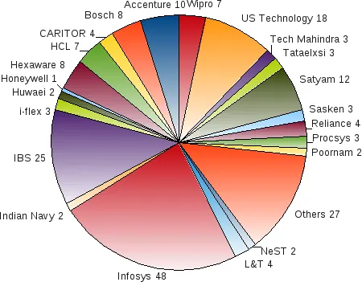
The placement and Training Cell is currently headed by Dr. Bejoy Varghese and for any queries regarding campus placement contact:Recruitment of B.Tech/M.tech/MCA
Dr. Bejoy Varghese
Associate Professor, Placement-in-charge
Ph: +91-94460 29662
Mob: +91-89215 05846
placements@fisat.ac.in
bejoyvarghese@fisat.ac.in
Recruitment of MBA (FISAT Business School)
Mr. Praveen V
Assistant Professor (Senior Grade),
FISAT Business School
ph: +91-0484 2725257
Mob: +91-9446589123, 7012863032, 9188990883
fbsplacements@fisat.ac.in